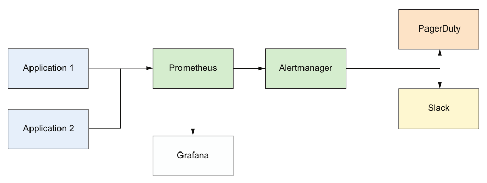
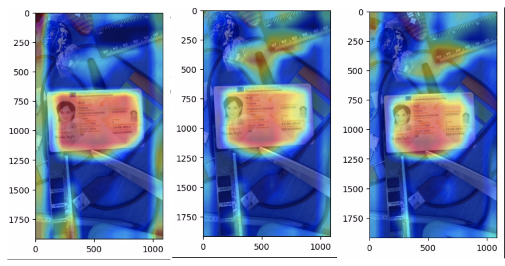

فصل ۱۱ · صص. ۳۲۵–۳۵۶
مانیتورینگ و explainability
Monitoring and explainability
Machine Learning Platform Engineering, 1st Edition
بردن مدل به production فقط گام اول است؛ نگه داشتن کارایی آن به مانیتورینگ و فهم رفتارش نیاز دارد (ص. ۳۲۵). فصل مانیتورینگ را دو بخش میکند: مانیتورینگ پایه برای سلامت عملیاتی سرویس و SLA، و مانیتورینگ drift برای اینکه دادهی ورودی و رابطهاش با هدف همان باشد که در آموزش دیده شد (ص. ۳۲۷). برای بخش اول dashboard آمادهی BentoML در Grafana، متریک سفارشی، log متمرکز با Loki و هشدار با Alertmanager را میسازد (صص. ۳۲۷–۳۴۳). برای بخش دوم با deepchecks drift تصویر و drift در embeddingهای recommender را پیدا میکند (صص. ۳۴۳–۳۵۰). در پایان explainability را با Eigen-CAM برای تشخیص شیء و یک مدل matrix factorization توضیحپذیر برای recommender نشان میدهد (صص. ۳۵۰–۳۵۵).
فهرست خود فصل (از فهرست مطالب کتاب)
- ۱۱.۱ مانیتورینگ — ص. ۳۲۷
- ۱۱.۱.۱ مانیتورینگ پایه — ص. ۳۲۷
- ۱۱.۱.۲ متریکهای سفارشی — ص. ۳۳۱
- ۱۱.۱.۳ logging — ص. ۳۳۴
- ۱۱.۱.۴ هشدار — ص. ۳۳۷
- ۱۱.۲ تشخیص data drift — ص. ۳۴۳
- ۱۱.۲.۱ تشخیص شیء — ص. ۳۴۳
- ۱۱.۲.۲ recommender فیلم — ص. ۳۴۸
- ۱۱.۳ explainability — ص. ۳۵۰
- ۱۱.۳.۱ تشخیص شیء — ص. ۳۵۲
- ۱۱.۳.۲ پیشنهاد فیلم — ص. ۳۵۴
از کتاب
مقدمه
روی نقشهی ذهنی، این فصل گام مانیتورینگ مدل است و هر دو پروژهی سرویسشده در فصل ۱۰ را میپاید (صص. ۳۲۵–۳۲۷).
از کتاب
۱۱.۱ مانیتورینگ
مانیتورینگ با کشف زودهنگام ناهنجاری، downtime را کم و SLA را حفظ میکند؛ هشدار مشکل را بهموقع به آدم درست میرساند (ص. ۳۲۷). متریکهای رایج SLA: uptime، throughput، latency پاسخ و کیفیت پاسخ؛ بیشتر سرویسها error budget ثابتی دارند (ص. ۳۲۷).
۱۱.۱ مانیتورینگ
۱۱.۱.۱ مانیتورینگ پایه
صص. ۳۲۷–۳۳۱ابزار BentoML از پیش endpoint /metrics دارد و این متریکها برای مانیتورینگ پایه کافیاند؛ فقط باید مطمئن شد Prometheus آنها را scrape میکند (ص. ۳۲۸). این کار را یک PodMonitor انجام میدهد: resource سفارشیای که میگوید کدام podها، کدام پورت و endpoint و با چه بسامدی scrape شوند (صص. ۳۲۸–۳۲۹). dashboard آمادهی BentoML که در Grafana import میشود، درخواستهای در جریان، RPS، نرخ موفقیت هر endpoint و مصرف CPU و حافظه را نشان میدهد (صص. ۳۳۰–۳۳۱).
۱۱.۱ مانیتورینگ
۱۱.۱.۲ متریکهای سفارشی
صص. ۳۳۱–۳۳۴| پروژه | متریک | نوع Prometheus | چرا |
|---|---|---|---|
| تشخیص شیء | امتیاز اطمینان پیشبینی، bucketهای دهک از ۰ تا ۱ | Histogram | دورههای اطمینان پایین: تصویر بیکیفیت یا افت مدل (صص. ۳۳۱–۳۳۲) |
| recommender | تعداد درخواستهایی که فیلم رتبهبندیشده دارند | Counter | مقدار تجمعی که فقط بالا میرود (ص. ۳۳۴) |
متریک histogram با observe در کد inference پر میشود و صدک ۹۰ آن در Grafana بهصورت gauge با یک پرسوجوی PromQL نمایش داده میشود (صص. ۳۳۲–۳۳۳).
API پیشبینی stack مرجع دستهی تراکنش را از متن merchant حدس میزند و Prometheus آن را scrape میکند.
?نوبت شما · latency و نرخ خطای API عالی است، ولی تیم مالی میگوید این هفته دستهها عجیب شدهاند. معادل متریک سفارشی کتاب برای این سرویس چیست؟دیدن پاسخ
یک histogram از احتمال کلاس برنده، مثل امتیاز اطمینان YOLO در کتاب (صص. ۳۳۱–۳۳۳)، و شاید یک counter به ازای هر دسته. افت صدکهای اطمینان یا جابهجایی سهم دستهها پیش از شکایت کاربر دیده میشود؛ متریکهای پایه فقط میگویند سرویس پاسخ میدهد، نه اینکه پاسخ درست است.
۱۱.۱ مانیتورینگ
۱۱.۱.۳ logging
صص. ۳۳۴–۳۳۷متریک اندازه میدهد، log جزئیات: پیام خطا، stack trace و ترتیب رویدادها تا شکست (صص. ۳۳۴–۳۳۵). logger BentoML یک logger معمولی Python است؛ مثلاً تصویری که برای inference خیلی کوچک است با یک trace id در log ثبت میشود (ص. ۳۳۵). روی GKE یا EKS log به Cloud Logging یا CloudWatch میرود و متریک در Grafana میماند؛ کتاب متمرکز کردن را توصیه میکند چون یک جا برای دیدن incident، تشخیص سریعتر و دسترسی چند team میدهد (صص. ۳۳۵–۳۳۶). Loki از Grafana Labs فقط metadata را index میکند، نه کل متن، و برای همین ارزان و scalable است (ص. ۳۳۶).
۱۱.۱ مانیتورینگ
۱۱.۱.۴ هشدار
صص. ۳۳۷–۳۴۳

| قاعده | عبارت | چه را میگیرد |
|---|---|---|
ServiceDown | up{...} == 0 | target هست ولی scrape نمیشود |
MissingUpMetric | absent(up{...}) == 1 | deployment حذف شده و متریکی نمانده |
از pp. 338–339. هر دو for: 5m دارند: هشدار اول pending میشود، زرد در UI، و فقط اگر شرط پنج دقیقه بماند firing میشود، قرمز (صص. ۳۳۸–۳۴۰). کتاب حذف deployment در Yatai را آزمون میکند و هشدار را به Gmail میفرستد (صص. ۳۴۰–۳۴۱). Alertmanager بر اساس namespace یا label مسیر میدهد؛ مثلاً severity: critical به PagerDuty و بقیه به Slack یا email (ص. ۳۴۲).
Airflow در stack مرجع DAG بارگیری شبانهی ClickHouse را اجرا میکند و Prometheus و Grafana آمادهاند.
?نوبت شما · کسی DAG را pause میکند و دیگر هیچ متریکی از اجرای آن نمیآید. هشدار «نرخ شکست DAG بالاتر از صفر» چیزی نمیگوید. درس absent کتاب اینجا چیست؟دیدن پاسخ
هشداری که روی مقدار یک متریک است، وقتی متریک اصلاً نیست ساکت میماند (ص. ۳۳۸). باید روی نبود سیگنال هم هشدار داد: absent یا معادلش، مثلاً «آخرین اجرای موفق یا تازگی دادهی Silver بیشتر از ۲۶ ساعت».
از کتاب
۱۱.۲ تشخیص data drift
فصل ۶ drift جدولی را با Evidently دید؛ اینجا همان ایده برای تصویر و برای embedding گسترش مییابد (ص. ۳۴۳).
۱۱.۲ تشخیص data drift
۱۱.۲.۱ تشخیص شیء
صص. ۳۴۳–۳۴۸دادهی تصویر ستون از پیش تعریفشده ندارد؛ پس ویژگیهایی مثل روشنایی، کنتراست، نسبت ابعاد و مساحت را برای تصویرهای آموزش و inference حساب و مقایسه میکنیم (صص. ۳۴۳–۳۴۴). deepchecks این را آماده دارد، بهعلاوهی بررسی یکپارچگی داده، اعتبارسنجی مدل و checkهای سفارشی (ص. ۳۴۴).
| گام | کار |
|---|---|
| ساختن drift | حدود ۱۰۰ تصویر کارت شناسایی با adjust_brightness و ضریب کمتر از ۱ تاریکتر میشوند (ص. ۳۴۴) |
| dataset | IDCardDataset زیرکلاس VisionDataset و load_dataset که VisionData برمیگرداند (صص. ۳۴۵–۳۴۶) |
| بررسی | ImagePropertyDrift روی train و test، با گزارش HTML (ص. ۳۴۶) |
| نتیجه | drift روشن در Brightness؛ Area و Aspect Ratio بیتغییر (صص. ۳۴۶–۳۴۸) |
در production باید تصویرها و برچسبهای پیشبینیشده در bucket یا پایگاه داده ذخیره شوند تا drift بهصورت دورهای حساب شود (ص. ۳۴۸).
۱۱.۲ تشخیص data drift
۱۱.۲.۲ recommender فیلم
صص. ۳۴۸–۳۵۰مدل recommender یک matrix factorization است و باید زیاد retrain شود، ولی drift در رتبهها هم ارزشمند است چون جابهجایی سلیقه یا محبوبیت را نشان میدهد (ص. ۳۴۸). کتاب رتبهی چند فیلم را یکی بالا میبرد، مدل را روی هر دو نسخه retrain میکند و با FeatureDrift توزیع factor پنهان همان فیلم را مقایسه میکند؛ drift دیده میشود (صص. ۳۴۹–۳۵۰).
از کتاب
۱۱.۳ explainability
مانیتورینگ میگوید مدل خوب کار میکند یا نه؛ explainability میگوید چرا (ص. ۳۵۰). برای مهندس، debug و یافتن سوگیری و همبستگی کاذب؛ برای کسبوکار، اعتماد، الزام قانونی و تصمیم بهتر (ص. ۳۵۱). مثال کتاب: قانون ECOA در آمریکا وامدهنده را ملزم میکند دلیل مشخص رد وام را بگوید (ص. ۳۵۱).
| نوع | شیوه | مثال |
|---|---|---|
| مبتنی بر مدل | ساختار خود مدل شفاف است | رگرسیون خطی، درخت تصمیم |
| پسینی | پس از آموزش مدل جعبهسیاه را تقریب میزند | SHAP، LIME |
از p. 351.
۱۱.۳ explainability
۱۱.۳.۱ تشخیص شیء
صص. ۳۵۲–۳۵۴روش Eigen-CAM از خانوادهی Class Activation Mapping، heatmap ناحیههایی را میسازد که بیشترین اثر را در تصمیم دارند، بینیاز به retrain (ص. ۳۵۲).


برای کارت شناسایی میشود دید مدل به چهره نگاه میکند یا نه؛ اگر چهره مهم نباشد، مدل به کارتهای بیچهره هم تعمیم مییابد (ص. ۳۵۳).
۱۱.۳ explainability
۱۱.۳.۲ پیشنهاد فیلم
صص. ۳۵۴–۳۵۵اینجا رویکرد مبتنی بر مدل است: explainable matrix factorization، که امتیاز توضیحپذیری را از نسبت کاربران مشابهِ رتبهداده به کل رتبهدهندگان میسازد و آن را وزن آموزش میکند (ص. ۳۵۴). خروجی برای هر پیشنهاد یک دیکشنری «رتبه: تعداد کاربر مشابه» است؛ مثلاً از ۹ کاربر مشابه، ۸ نفر ۴ یا بالاتر دادهاند، و پیشنهاد اول در مثال کتاب اصلاً توضیحی ندارد (ص. ۳۵۵).
مرور
بدهبستانها در یک نگاه
| انتخاب | چه میدهد | چه میگیرد |
|---|---|---|
| dashboard آمادهی BentoML | مانیتورینگ پایه بیدردسر | منطق کسبوکار را نمیبیند (ص. ۳۳۱) |
| متریک سفارشی | دید بر کیفیت پیشبینی | کد و نگهداری بیشتر (صص. ۳۳۱–۳۳۴) |
| log متمرکز با Loki | یک جا برای log و متریک، ارزان | جستوجوی کامل متن ضعیفتر چون فقط metadata index میشود (ص. ۳۳۶) |
for: 5m در قاعدهی هشدار | هشدار کاذب کمتر | پنج دقیقه دیرتر خبر میشوید (ص. ۳۴۰) |
| drift روی ویژگی تصویر | بیبرچسب کار میکند | فقط ویژگیهایی را میبیند که انتخاب کردهاید (صص. ۳۴۶–۳۴۸) |
| explainability مبتنی بر مدل | توضیح ذاتی | محدود به مدلهای خاص (صص. ۳۵۱، ۳۵۴) |
| explainability پسینی | برای هر مدل | تقریب است (ص. ۳۵۱) |
مرور
نکتههای کلیدی
- هیچ برنامهای بدون مانیتورینگ آمادهی production نیست؛ هشدار باید آدم مناسب را خبر کند (ص. ۳۲۷).
- مانیتورینگ پایه دو دسته متریک دارد: مصرف منابع، چون CPU و حافظه و تعداد pod سقف دارند، و متریک درخواست مثل latency و تعداد پاسخ غیر ۲۰۰ (صص. ۳۲۷–۳۲۸).
- متریک سفارشی منطق کسبوکار را میپاید: histogram اطمینان پیشبینی برای تشخیص شیء، counter درخواستهای دارای فیلم رتبهبندیشده برای recommender (صص. ۳۳۱–۳۳۴).
- ثبت log جزئیاتی میدهد که متریک ندارد، و log و متریک بهتر است در یک جا متمرکز شوند؛ Loki فقط metadata را index میکند و برای همین ارزان است (صص. ۳۳۴–۳۳۶).
- قاعدهی
up == 0حذف deployment را نمیبیند؛ برای آنabsent(up{...})لازم است (ص. ۳۳۸). - پدیدهی drift تصویر با ویژگیهای تصویر سنجیده میشود، مثل روشنایی و نسبت ابعاد و مساحت، نه با ستونهای جدول (صص. ۳۴۳–۳۴۴).
- نشانهی drift در recommender را میشود در factorهای پنهان دید: پس از retrain روی دادهی تغییرکرده، توزیع factor همان فیلم جابهجا میشود (صص. ۳۴۸–۳۵۰).
- مفهوم explainability دو نوع است: مبتنی بر مدل، که خود مدل شفاف است، و پسینی مثل SHAP و LIME (ص. ۳۵۱).
تمرین
خودتان را بسنجید
پرسشها و پاسخها مال vault است و از روی یادداشتهای بالا نوشته شده؛ پاسخها به صفحههای کتاب ارجاع میدهند.
۱دو دسته متریک مانیتورینگ پایه کداماند؟دیدن پاسخ
مصرف منابع، یعنی CPU و حافظه و تعداد pod که سقف دارند، و متریک درخواست مثل latency و تعداد پاسخ غیر ۲۰۰ (صص. ۳۲۷–۳۲۸).
۳هشدار زرد در UI Prometheus یعنی چه؟دیدن پاسخ
pending: شرط برقرار شده ولی هنوز به مدت for نمانده؛ پس از آن قرمز و firing میشود (ص. ۳۴۰).
۴چرا drift تصویر را با ستونها نمیسنجیم؟دیدن پاسخ
تصویر ستون از پیش تعریفشده ندارد؛ ویژگیهایی مثل روشنایی، کنتراست، نسبت ابعاد و مساحت حساب و مقایسه میشوند (صص. ۳۴۳–۳۴۴).
۵روش Eigen-CAM مبتنی بر مدل است یا پسینی، و retrain لازم دارد؟دیدن پاسخ
روی مدل آموزشدیده اعمال میشود و retrain یا تغییر مدل لازم ندارد (ص. ۳۵۲)؛ پس پسینی است. EMF برعکس مبتنی بر مدل است (ص. ۳۵۴).
مکمل
فراتر از کتاب
مکمل vault، نه از متن کتاب.
- ابزار Alertmanager هشدارهای همزمان را با
group_byگروه میکند و با inhibition هشدار وابسته را خاموش میکند؛ این همان مشکل «یک email برای هر هشدار» در Figure 11.15 است. - رمز Gmail در مثال کتاب یک app password است؛ در یک platform واقعی این مقدار در secret Kubernetes میرود، نه در values file که در git است.
قدمهای بعدی
ادامه بدهید
پیوندها
- فصلهای مرتبط: فصل ۳: ساختن برنامه روی Kubernetes که Prometheus و Grafana را نصب کرد، فصل ۶: بردن مدلهای ML به production که drift جدولی را با Evidently دید، و فصل ۱۰: inference و serving مدل که سرویسهایی را ساخت که اینجا پاییده میشوند.
- اجرا کنید: اندازهی پنجره و هشدار کاذب drift — همان آزمون آماری، با پنجرههای کوچکتر و بزرگتر.